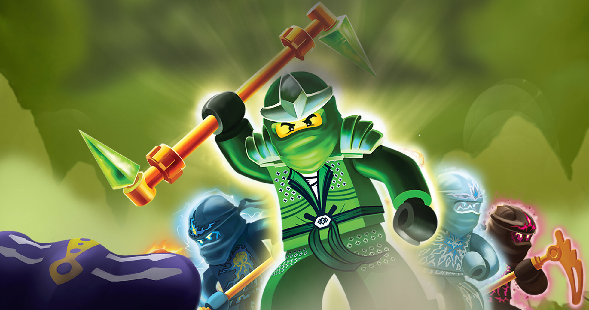

Summary:
Lego Ninjago is a children's television show that first aired on Cartoon Network in 2011. In the main series, there are 10 seasons but there have been two reboot-like series airing on Netflix (Crystalized and Dragon's Rising). It follows a close knit group of ninjas who use their elemental powers to stop the forces of evil. Along the way, they encounter many emotional revelations about themselves and discover their "true potential" which allows them to use their powers being unhampered by their pasts.
The first seasons revolve around the legendary Green Ninja who is destined to defeat the dark lord, Garmadon. Each ninja thinks it is himself for one reason or another but it is eventually revealed to be Lloyd, Garmadon's own son. Lloyd is trained as the Green Ninja until the climax of season 2 where Lloyd defeats his overlord possesed father as the Ultimate Spinjitzu Master. Garmadon is released from his darkness and becomes a sensei himself.
After the final battle, the ninja become mere school teachers eager for another adventure. In season 3: Rebooted, the ninja embark on an unexpected fieldtrip of borg industries, the building erected on the ground of the final battle as a symbol of prgress and perseverance. During their tour, they discover that the overlord is alive and is living in the network. Cyrus Borg, the visionary behind New Ninjago City, gives the ninja the Technoblades and tells them to reboot the system (turning it off and on again lol). At the end of teh season, the overlord escapes and wreaks havoc on New Ninjago City. In the climax, Zane sacrifices himself to defeat the Overlord and is presumed dead.
In season 4: The Tournement of Elements, the ninja have parted ways and are living very sifferent lives from each other. Cole works as a lumberjack, Jay is a gameshow host, Kai fights as a pro wrestler, and Lloyd helps Borg shore up his defenses (risk management lol). They each mourn Zane in their own way but they are all running from the grief. Lloyd seeks the other three out to reignite their brotherhood. They meet at Mater Chen's noodle house, a popular chain for any noodle-loving ninja. When their discussion is over, they sneak into the back alley and find a secret note. It tells the ninja that if they ever want to see their friend again to meet at the port the following night. They meet at the port and are barged to Chen's Island for the tournement of elements. It turns out to be a front for Chen to steal everyone's powers. Partway through the tournement, Cole is eliminated and finds Zane in the catacombs of the Island. The season ends with Chen attacking Ninjago with the acquired powers from the elemental masters and Garmadon, a former pupil of Chen's, sacrificing himself to banish Chen to the cursed realm
Other seasons Include:
- Season 5: Possesion
- Season 6: Skybound
- Day of the Departed special
- Season 7: The Hands of Time
- Season 8: Sons of Garmadon
- Season 9: Hunted
- Season 10: March of the Oni
Music
The most notable music from Lego Ninjago are the title themes. The video below is the official music video for 'Weekend Whip' by the Fold: